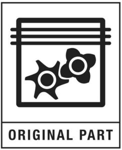

Trade Mark Journal No.2025/034 22 August 2025
WO0000001868598 (4,7,8,9,11,37)
Office of origin: European Union Intellectual Property Office (EUIPO)
Date of International Registration:10 April 2025
Date of designation in the UK:
10 April 2025

International priority date claimed: 23 October 2024
(European Union Intellectual Property Office (EUIPO))
(019094943)
- Class 4
- Lubricating oils and greases; industrial oils and greases, industrial lubricants; lubrication oils for industrial refrigeration apparatus; lubricants for compressors; lubricants for vacuum systems; motor oils.
- Class 7
- Filters for motors and engines; air filters for motors and engines; fuel filters; filters being part of machines; oil filters; fuel filter; filters for cleaning cooling air; hydraulic filter; oil filters for compressors and vacuum pumps; oil filters for engines for compressors and vacuum pumps; oil filters [machine parts] for compressors and vacuum pumps; oil filters for motors and engines for compressors and vacuum pumps; filter cartridges for industrial filtering machines; cartridges for filtering machines, filter housings being part of engines; oil separators for compressors and vacuum pumps; separators for oil for compressors and vacuum pumps; oil separators [machines] for compressors and vacuum pumps; condensate separators being parts of machines; valves for compressors and vacuum pumps; automatic inlet control valves for reciprocating air compressors; valves for pumps; drainage machines for compressors and vacuum pumps; machine tools for sale in kit form for compressors and vacuum pumps; oil coolers for engines; drilling rods and bits; hammer drills; power hammer; pneumatic drills; belts for conveyors; paint spray guns; compressed air guns; blow guns; couplings for machines; machines and machine tools in the field of air systems; motors, other than for land vehicles; air filters for motors; air filters for engines and motors; machine couplings and transmission belts (except for land vehicles); compressed air and gas systems; generators; compressors, air compressors, gas compressors, piston compressors, refrigerator compressors, and parts and fittings for the aforesaid goods; replacement parts for all the aforesaid goods; drill rods for machine tools.
- Class 8
- Hand tools and implements (hand-operated), in particular for stone, concrete, metal, wood and brick works such as nut runners, screw drivers, screw tightening tools; screw rotors; grinding and polishing tools, coal picks, pickaxes, riveting tools, sheeting hammers, forging hammers, chipping hammers, scaling hammers, striking tools, threading tools, spades, wood and metal drills, augers, rod coupling sleeves, gimlet bits, milling and grinding wheels, cutting wheels and saw blades for hand tools, saws, chisels, rasps, reamers; hand operated spraying and spreading apparatus for liquids, semi-liquids and pulverized solid materials; gravers; milling cutters (hand tools); fishing taps; hard metal drill bits; drill rod centralizers; all the aforementioned goods for hand-operated tools.
- Class 9
- Electronic controllers for compressors and vacuum pumps; electric control devices for air, gas and vacuum systems and compressors; power controllers for air, gas and vacuum systems and compressors; electrical and electronic controllers for air, gas and vacuum systems and compressor; instruments and apparatus for use in testing, control, detection, monitoring and the analysis of materials during operation air systems; electronic control devices for energy management; power controllers for generators or renewables; displays for control devices and controllers for air systems; displays for control devices and controllers for generators and/or energy producing machines; inverters; electrical inverter; inverters for power supply; gauges; pressure gauges; vacuum gauges; transducers; electronic quality measurement systems; pressure sensors; thermostats; temperature sensors; pressure switches; thermistors; sensors; temperature measuring sensors, thermocouples, temperature measuring devices; instruments and apparatus for measurement of temperature, pressure, current, voltage as part of controllers for air, gas and vacuum systems and compressors; electrical and power connectors for instruments and apparatus for measurement of temperature, pressure, current and voltage; splitter boxes; parts and fittings for all the aforesaid goods, replacement parts for all the aforesaid goods; computer software for updating firmware for monitoring status, operation, function, environment, failures and errors of air, gas and vacuum systems and compressors; computer software for the configuration of air systems and controllers therefor; software for remote handling of apparatus in the field of air, gas and vacuum systems and compressors; process software also including artificial intelligence software.
- Class 11
- Air filters for industrial use; compressed gas purification filters; air filters for compressors and vacuum pumps; air filters for the filtration of industrial compressed air systems; filtration apparatus for industrial purposes, namely, air filtering installations and air filters for industrial installations; water coolers; air separators; heat exchangers; compressed air dryers for industrial use; apparatus for refrigerating, drying purposes; dryers for the removal of water vapor from compressed air and gases and refrigerators; coolers for compressed gas; demisters for compressors and vacuum pumps; electric driers for air and compressed gas; air cooling apparatus; process chillers; air purifiers; oil vapour removal systems; condensate drains.
- Class 37
- Maintenance, installation, cleaning, repair and servicing work related to air systems, gas systems, vacuum systems, industrial installations, technical equipment, safety, security, protection and signaling equipment, measuring, detection and monitoring instruments, devices; rental, hiring and leasing of goods in connection with maintenance, installation, cleaning, repair and servicing of industrial equipment, technical equipment, field repair of industrial apparatus; maintenance of air systems, gas systems and vacuum systems, manifolds, monitoring equipment and consultation in conjunction therewith; technical service intervention; maintenance and repair of spare parts kits for air compressors and vacuum systems; technical replacement of spare parts for industrial equipment.
ATLAS COPCO AIRPOWER, NV
Representative: Atlas Copco Airpower, N.V., ATLAS COPCO AIRPOWER N.V., Boomsesteenweg 957, B-2610 Wilrijk, BELGIUM